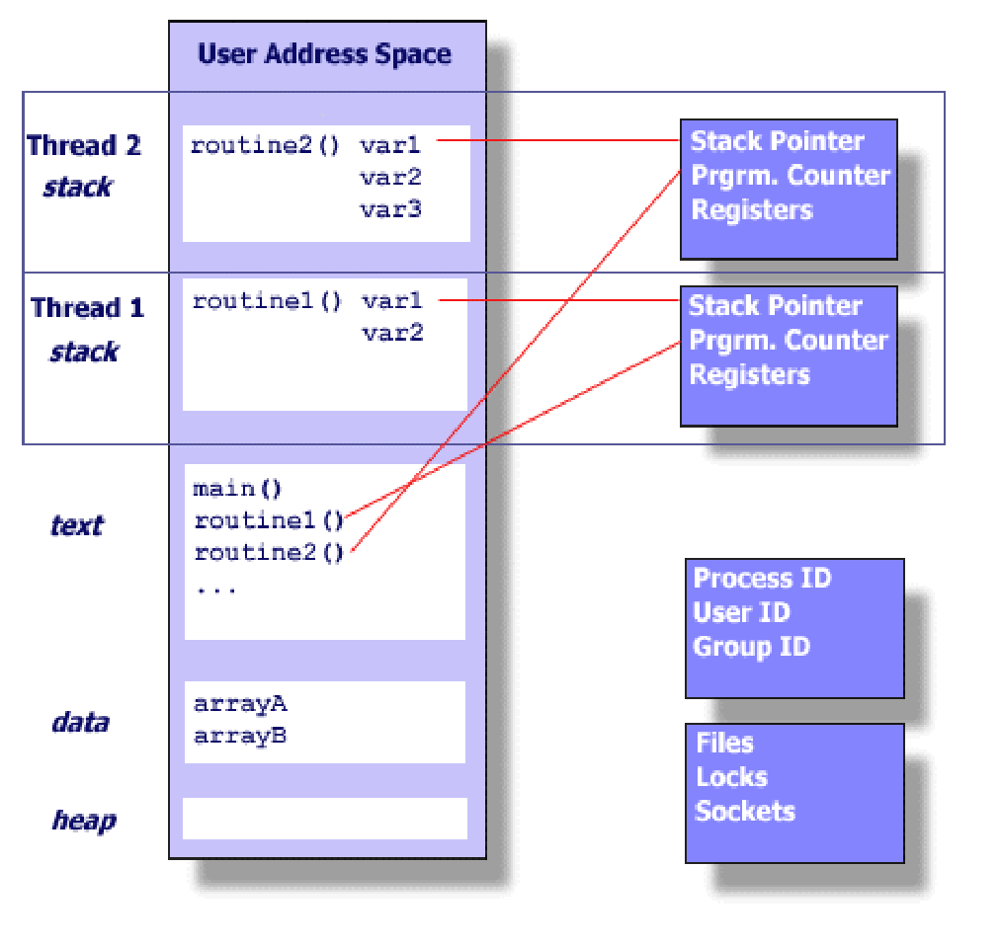

סנכרון Threads — Race Condition ו-Mutex
⏱ זמן משוער: 55 דק'
0. אינטואיציה — למה בכלל צריך "סנכרון"
במודול הקודם, Threads, ראינו איך יוצרים כמה חוטים בתוך תהליך אחד, ושכולם חולקים את אותו מרחב זיכרון. זה בדיוק מה שהופך חוטים לנוחים — וגם מה שהופך אותם למסוכנים. השיעור הזה עוסק בסכנה הזאת ובפתרון הקלאסי לה.
הדוגמה שהמרצה שרטט: שני משתמשים מעדכנים שדה אחד
על הלוח היו משתמש א' ומשתמש ב', ושניהם מבצעים inc (הגדלה ב-1) לאותו שדה בדיוק בטבלת מסד הנתונים — למשל מונה צפיות, יתרה, או מספר פריטים במלאי. כל אחד מהם, לבדו, פועל נכון לחלוטין. הבעיה מתחילה כששניהם פועלים באותו זמן.
כל ההמשך של השיעור הוא בעצם התשובה לשאלה אחת: מה בדיוק משתבש שם, ואיך מונעים את זה בקוד C עם pthreads.
הפתיחה של דף העזר: שלוש הסכנות של תכנות מקבילי
דף העזר של המרצה, Race Conditions & The Mutex Mechanism, נפתח באמירה קצרה וחדה:
הפרק עצמו, כדבריו, מתמקד ב-race condition: מה פירוש המושג, דוגמאות קוד שמסבירות אותו, ובהמשך מנגנון אחד, מתוך כמה מנגנונים, שנועד לאפשר למתכנתים לפתח תוכניות שבמהלך ריצתן לא ייווצר מצב של race condition — ה-Mutex. ל-deadlock ול-starvation נחזור בסעיף 8.
מקור: mutex.pdf, עמ' 1 · השלמות מהמחברת: שיעור 27.8.2026
1. משתנים גלובליים (משותפים) מול לוקאליים
לפני שמדברים על מירוץ, צריך להבין על מה בדיוק מתרוצצים. חוט לא יכול "להתנגש" עם חוט אחר על משתנה שאף אחד מהם לא רואה — ההתנגשות אפשרית רק על זיכרון משותף.
כשתוכנית C נטענת לזיכרון, מרחב הכתובות שלה מחולק למקטעים (segments). זו החלוקה שראינו במודול Threads:
| מקטע | מה נמצא בו | משותף לכל החוטים? |
|---|---|---|
| text (code) | הוראות המכונה של התוכנית | ✔ משותף |
| .data | משתנים גלובליים שאותחלו לערך (למשל int counter = 5;) | ✔ משותף |
| .bss | משתנים גלובליים ללא אתחול מפורש — מאופסים בטעינה (למשל pthread_mutex_t g_sync_mutex; בדוגמת code.pdf) | ✔ משותף |
| heap | זיכרון שהוקצה דינמית ב-malloc() | ✔ משותף |
| stack | משתנים לוקאליים, פרמטרים, כתובות חזרה — מחסנית נפרדת לכל חוט | ✘ פרטי לכל חוט |

בתרשים רואים את זה בדיוק: לכל חוט יש מחסנית משלו (עם המשתנים הלוקאליים שלו), וגם קבוצת אוגרים (Registers), מצביע מחסנית (Stack Pointer) ומונה תוכנית (Program Counter) משלו. לעומת זאת text, data ו-heap — וגם ה-Files / Locks / Sockets — משותפים לכל התהליך.
מקור: threads (1).pdf, עמ' 5 · code.pdf (חלוקת המשתנים ל-.data/.bss/Heap/Stack) · השלמות מהמחברת: שיעור 27.8.2026
2. Race Condition — הגדרה מדויקת והתנאים להיווצרותה
Race Condition ("מצב מירוץ") הוא מצב שבו נכונות התוצאה של התוכנית תלויה בסדר שבו המעבד במקרה הריץ את החוטים — ולא רק בקוד עצמו. אותה תוכנית, על אותם נתונים, יכולה להחזיר תוצאה אחרת בכל הרצה.
למה counter++ אינו אטומי — הסיבה הארכיטקטונית
זו הנקודה המרכזית של השיעור כולו. המרצה כותב אותה במפורש בדף העזר: הסיבה שהקוד נכשל היא בשל העובדה שפעולת ה-++ אינה אטומית.
| השלב | מה קורה בפועל |
|---|---|
| 1. Read | קריאת הערך מהזיכרון (RAM) לתוך אוגר (Register) במעבד. |
| 2. Modify | הוספת 1 לערך בתוך האוגר. |
| 3. Write | כתיבת הערך המעודכן מהאוגר חזרה לזיכרון. |
התבנית הזאת — Read / Modify / Write — חוזרת בכל פעם שמשנים ערך קיים: counter++, balance += 10, x = x * 2. תמיד שלושה שלבים, ותמיד יש "חלון" ביניהם.
תרחיש השזירה — הטבלה שצריך לזכור בעל-פה
נניח ש-counter מכיל 100, ושני חוטים מבצעים counter++ "באותו זמן". הנה מה שקורה כשה-Kernel מחליט לעצור את חוט א' בדיוק אחרי שלב ה-Read שלו:
| # | חוט א' (האוגר שלו) | חוט ב' (האוגר שלו) | counter בזיכרון |
|---|---|---|---|
| 1 | Read ← האוגר של א' מקבל 100 | — | 100 |
| ⇅ Context Switch — כאן בדיוק המתזמן עצר את חוט א' והעביר את המעבד לחוט ב' | |||
| 2 | מוקפא — האוגר שלו שומר 100 | Read ← האוגר של ב' מקבל 100 | 100 |
| 3 | מוקפא | Modify ← האוגר של ב' = 101 | 100 |
| 4 | מוקפא | Write ← כותב 101 לזיכרון | 101 |
| ⇅ Context Switch — המעבד חוזר לחוט א', שממשיך בדיוק מהנקודה שבה נעצר | |||
| 5 | Modify ← האוגר של א' = 101 | — | 101 |
| 6 | Write ← כותב 101 לזיכרון (דורס!) | — | 101 |
שימו לב איפה בדיוק נמצא הכשל: לא בכתיבה עצמה, אלא בכך שחוט א' עשה את ההחלטה שלו ("101") על סמך ערך שכבר לא היה תקף ברגע שהוא כתב אותה. ה-Read וה-Write שלו נקרעו לשניים על ידי החלפת ההקשר.
למה באגי סנכרון הם הקשים ביותר לאיתור
אם תריצו את דוגמה 1 ובמקרה תקבלו 2,000,000 — אל תסיקו שהקוד תקין. זו בדיוק הסכנה, וזו הייתה אחת ההדגשות החזקות של המרצה בכיתה:
השם המקצועי לתופעה הוא Non-determinism — חוסר עקביות: אותה תוכנית, אותו קלט, תוצאה שונה. באג כזה יכול לעבור את כל בדיקות ה-QA, להופיע רק אצל לקוח אחד, רק תחת עומס, ורק פעם בשבוע.
מקור: mutex.pdf, עמ' 3 · threads.pdf, עמ' 5 · השלמות מהמחברת: שיעור 27.8.2026 (עמ' 4-5, 7)
3. דוגמה 1 — המונה המשותף (הדגמה בסיסית)
זו הדוגמה הראשונה בדף העזר, והיא קיימת גם ב-threads.pdf תחת הכותרת "דוגמה המדגימה Race Condition על המשתנה הגלובלי", עם המטרה המפורשת: "כדי להמחיש את הסכנות בעבודה עם חוטים".
מה התוכנית עושה: שני חוטים מנסים לקדם (increment) משתנה גלובלי אחד — counter — מיליון פעמים כל אחד. אין שום סנכרון ביניהם.
#include <pthread.h>
#include <stdio.h>
/* Shared global variable */
int counter = 0;
/* Function to increment the counter 1,000,000 times */
void* increment_task(void* arg)
{
for (int i = 0; i < 1000000; i++) {
/* The Race Condition happens here:
This operation is not atomic at the CPU level. */
counter++;
}
return NULL;
}
int main()
{
pthread_t t1, t2;
/* Create two threads performing the same task */
pthread_create(&t1, NULL, increment_task, NULL);
pthread_create(&t2, NULL, increment_task, NULL);
/* Wait for both threads to finish execution */
pthread_join(t1, NULL);
pthread_join(t2, NULL);
/* Print the final result */
printf("Final Counter Value: %d\n", counter);
printf("Expected Value: 2000000\n");
return 0;
}למה נמוכה יותר ולא גבוהה יותר? כי כל שזירה "רעה" מאבדת קידום (כמו בטבלה בסעיף 2) — היא לעולם לא ממציאה קידום נוסף. וכמה בדיוק אובד? זה תלוי במספר החלפות ההקשר שהמתזמן במקרה ביצע בהרצה הזאת — ולכן המספר משתנה מהרצה להרצה.
נסו בעצמכם — סימולטור השזירה
הרכיב הבא מפרק את counter++ לשלוש הוראות המכונה שלו ומאפשר לכם לבחור בעצמכם את סדר השזירה בין שני החוטים — ולראות את הערך שאובד. אחר כך הדליקו את ה-Mutex ובדקו מה משתנה.
מקור: mutex.pdf, עמ' 2-3 · threads.pdf, עמ' 4-5
4. דוגמה 2 — ניהול חשבון בנק (הדוגמה המורכבת והמשמעותית)
כאן המרצה מדגים מערכת שמבצעת אלפי פעולות של הפקדה (Deposit) ומשיכה (Withdraw) במקביל על ידי חוטים שונים. בלשונו: "זו דוגמה 'מהחיים האמיתיים' שמראה איך באגים כאלו גורמים לנזק כספי או לוגי".
מה התוכנית עושה: חשבון אחד שמתחיל ב-$1000. שני חוטים מפקידים $10 מאה אלף פעמים, ושני חוטים מושכים $10 מאה אלף פעמים. סך ההפקדות = סך המשיכות, ולכן תיאורטית היתרה חייבת לחזור בסוף בדיוק ל-$1000.00.
#include <pthread.h>
#include <stdio.h>
#include <unistd.h>
/* Structure representing a bank account */
typedef struct {
double balance;
} BankAccount;
BankAccount my_account = {1000.0}; // Starting with $1000
/* Function to simulate many small deposits */
void* deposit_service(void* arg)
{
for (int i = 0; i < 100000; i++) {
double temp = my_account.balance;
temp += 10.0; // Deposit $10
/* Simulating a tiny delay to increase the chance of a context switch */
my_account.balance = temp;
}
return NULL;
}
/* Function to simulate many small withdrawals */
void* withdraw_service(void* arg)
{
for (int i = 0; i < 100000; i++) {
double temp = my_account.balance;
temp -= 10.0; // Withdraw $10
my_account.balance = temp;
}
return NULL;
}
int main()
{
pthread_t t1, t2, t3, t4;
printf("Starting Balance: $%.2f\n", my_account.balance);
/* Creating multiple threads for deposits and withdrawals */
pthread_create(&t1, NULL, deposit_service, NULL);
pthread_create(&t2, NULL, withdraw_service, NULL);
pthread_create(&t3, NULL, deposit_service, NULL);
pthread_create(&t4, NULL, withdraw_service, NULL);
/* Wait for all banking transactions to complete */
pthread_join(t1, NULL);
pthread_join(t2, NULL);
pthread_join(t3, NULL);
pthread_join(t4, NULL);
/* Theoretically, balance should still be $1000.00 */
printf("Final Balance: $%.2f\n", my_account.balance);
return 0;
}ההסבר הלוגי המפורט — ארבע הנקודות של המרצה
המרצה ממספר בדף העזר ארבע נקודות שמסבירות במה הדוגמה הזאת מסובכת יותר מהמונה. כדאי לזכור אותן בדיוק בסדר הזה — הן מנוסחות כמו תשובה לשאלה פתוחה בבחינה:
1. ריבוי חוטים
השתמשנו בארבעה חוטים (שניים מפקידים ושניים מושכים). זה מגדיל משמעותית את כמות ה"התנגשויות" בזיכרון.
2. מניפולציה מפורשת
בניגוד ל-++ הפשוט, כאן הפרדנו את הקריאה מהכתיבה על ידי שימוש במשתנה זמני (temp). זה מדמה קוד לוגי אמיתי שבו מבצעים חישובים לפני עדכון הנתונים.
3. חוסר עקביות (Non-determinism)
אם נריץ את התוכנית הזו מספר פעמים, יש סיכוי כי נקבל תוצאות שונות. ייתכנו שלוש תוצאות שונות: יתרה של $850, או של $1120, או של $1000. בכל אופן, בכלל לא ודאי כי בכל הרצה היתרה תהיה $1000 !!!
4. הסכנה
צריך להבין שה-Kernel יכול להחליט להפסיק חוט אחד (Context Switch) בדיוק בין השורה שבה הוא חישב את ה-temp לבין השורה שבה הוא עדכן את ה-balance. בזמן שהחוט הראשון "ישן", חוטים אחרים שינו את היתרה בזיכרון. כשהחוט הראשון מתעורר, הוא דורס את השינויים של חבריו עם הערך הישן שהיה לו ב-temp.
מקור: mutex.pdf, עמ' 3-5 · threads.pdf, עמ' 5-6
5. הפתרון — מנגנון ה-Mutex
אחרי שהצגנו את הבעיה, המרצה עובר "לפתרון הקלאסי מעולם ה-System Programming": מנגנון ה-Mutex — קיצור של Mutual Exclusion (הדרה הדדית).
מה השתנה בקוד: ל-BankAccount נוסף שדה pthread_mutex_t lock — המנעול של החשבון עצמו — וכל גישה ל- balance נעטפת ב-lock / unlock. שאר הקוד זהה בדיוק לדוגמה 2.
#include <pthread.h>
#include <stdio.h>
#include <unistd.h>
/* Structure representing a bank account with its own lock */
typedef struct {
double balance;
pthread_mutex_t lock; // The Mutex: A synchronization object
} BankAccount;
/* Initialize the account with $1000 and an initialized mutex */
BankAccount my_account = {
.balance = 1000.0,
.lock = PTHREAD_MUTEX_INITIALIZER // Static initialization of the mutex
};
/* Function to simulate many small deposits - NOW THREAD SAFE */
void* deposit_service(void* arg)
{
for (int i = 0; i < 100000; i++) {
// [CRITICAL SECTION START]
// Request exclusive access. If another thread has the lock, this thread waits.
pthread_mutex_lock(&my_account.lock);
double temp = my_account.balance;
temp += 10.0;
my_account.balance = temp;
// [CRITICAL SECTION END]
// Release the lock so other threads can proceed.
pthread_mutex_unlock(&my_account.lock);
}
return NULL;
}
/* Function to simulate many small withdrawals - NOW THREAD SAFE */
void* withdraw_service(void* arg)
{
for (int i = 0; i < 100000; i++) {
// Attempt to lock. Only one thread (deposit or withdraw) can hold it.
pthread_mutex_lock(&my_account.lock);
double temp = my_account.balance;
temp -= 10.0;
my_account.balance = temp;
// Release the lock.
pthread_mutex_unlock(&my_account.lock);
}
return NULL;
}
int main()
{
pthread_t t1, t2, t3, t4;
printf("Starting Balance: $%.2f\n", my_account.balance);
pthread_create(&t1, NULL, deposit_service, NULL);
pthread_create(&t2, NULL, withdraw_service, NULL);
pthread_create(&t3, NULL, deposit_service, NULL);
pthread_create(&t4, NULL, withdraw_service, NULL);
pthread_join(t1, NULL);
pthread_join(t2, NULL);
pthread_join(t3, NULL);
pthread_join(t4, NULL);
/* With Mutex, the result will ALWAYS be exactly $1000.00 */
printf("Final Balance: $%.2f\n", my_account.balance);
// Cleanup: Destroy the mutex when no longer needed
pthread_mutex_destroy(&my_account.lock);
return 0;
}המפתח היחיד לחדר — האנלוגיה של המרצה
"נחסם" זו לא הצלחה ולא כישלון — זו המתנה. הקריאה pthread_mutex_lock פשוט לא חוזרת עד שהמנעול מתפנה. החוט לא ממשיך לשורה הבאה, לא מקבל שגיאה, ולא צורך זמן מעבד בינתיים (נראה בסעיף 6 למה).
מקור: mutex.pdf, עמ' 5-8 · threads.pdf, עמ' 7-8 · השלמות מהמחברת: שיעור 27.8.2026 (עמ' 8-9)
6. הלוגיקה מנקודת המבט של ה-Kernel
המרצה פותח את החלק הזה במשפט "זהו החלק המרתק בהקשר של System Programming" — וצדק: כדי להבין איך הקוד הזה פותר את הבעיה, עלינו לצלול לתוך הקשר שבין ה-C Library לבין ה-Kernel.
1. ניסיון הנעילה
כשהחוט קורא ל-pthread_mutex_lock, הספרייה בודקת אם המנעול פנוי — לרוב בעזרת הוראת מעבד אטומית כמו Atomic Compare-and-Swap.
2. המתנה (Wait State)
אם המנעול תפוס, החוט לא מבצע "לולאה אינסופית" (זה היה מבזבז זמן CPU). במקום זאת מתבצעת קריאת מערכת (כמו futex ב-Linux) שמעבירה את החוט למצב Sleep/Blocked.
ה-Kernel מוציא את החוט מתור התזמון (Scheduler) ולא נותן לו זמן מעבד עד שהמנעול משתחרר.
3. השחרור
כשהחוט המחזיק במנעול קורא ל-pthread_mutex_unlock, הוא "מעיר" את אחד החוטים הממתינים בתור (אם יש כאלו). ה-Kernel מחזיר את החוט שהתעורר למצב Ready, והוא יוכל להמשיך בביצוע ברגע שהמתזמן יבחר בו.
מי בעצם מממש את כל זה? — שרשרת המימוש
ארגומנטים ופונקציות מרכזיות
| הפונקציה / הטיפוס | ארגומנט | מה היא עושה — ומה חשוב לזכור |
|---|---|---|
pthread_mutex_t |
— | טיפוס הנתונים של המנעול. מכיל מבנה נתונים פנימי שעוקב אחרי המצב (נעול/פתוח) ואחרי רשימת החוטים הממתינים. |
PTHREAD_MUTEX_INITIALIZER |
— | מאקרו לאתחול סטטי. קובעת את ערכי ברירת המחדל של המנעול מבלי צורך לקרוא לפונקציית אתחול מפורשת. (פירוט מלא בסעיף 7.) |
pthread_mutex_lock(mutex) |
מצביע ל-mutex | ניסיון לקבל בעלות על המנעול. פעולה זו היא חוסמת (Blocking) — היא לא חוזרת עד שהמנעול בידיים שלנו. |
pthread_mutex_unlock(mutex) |
מצביע ל-mutex | שחרור המנעול. זוהי פעולה שחייבת להתבצע תמיד על ידי אותו חוט שביצע את הנעילה — ההדגשה המפורשת של המרצה, וגם שאלה 13 בבחינה לדוגמה (סעיף 9). |
pthread_mutex_destroy(mutex) |
מצביע ל-mutex | ניקוי: משמידים את המנעול כשכבר אין בו צורך. בקוד למעלה זה קורה ב-main, אחרי כל ה-pthread_join. |
pthread_mutex_init(mutex, attr) |
מצביע ל-mutex, מצביע לתכונות (או NULL) | אתחול דינמי — החלופה ל-PTHREAD_MUTEX_INITIALIZER, לשימוש כשהמנעול לא גלובלי או כשרוצים תכונות מיוחדות. זו הדרך שבה המרצה אתחל את המנעול בדוגמת Reader/Writer שב-code.pdf. |
סיכום הלוגיקה של התוכנית המשופרת
מקור: mutex.pdf, עמ' 8-9 · threads.pdf, עמ' 9 · code.pdf (pthread_mutex_init) · השלמות מהמחברת: שיעור 27.8.2026 (עמ' 6-8)
7. PTHREAD_MUTEX_INITIALIZER — לעומק
לעמוד האחרון של דף העזר המרצה הקדיש נושא אחד בלבד, וסימן אותו כולו במרקר ירוק — סימן מובהק שהוא רואה בו חומר לבחינה. ארבע השאלות שהוא שואל, ותשובותיו:
- מהו האובייקט הזה?
- PTHREAD_MUTEX_INITIALIZER הוא Macro (מאקרו) המוגדר בשפת C. הוא משמש כערך קבוע (Constant) המכיל רשימת ערכים ראשוניים עבור המבנה הפנימי של ה-Mutex. כלומר: לא פונקציה ולא קריאת מערכת — סתם טקסט שהמהדר מציב במקומו.
- היכן הוא מוגדר?
-
בקובץ הכותרת
<pthread.h>. במערכות מבוססות Linux, קובץ זה הוא חלק מחבילת ה-Glibc (GNU C Library). - מהי הגדרתו המדויקת?
- ההגדרה משתנה בין ארכיטקטורות (כמו x86_64 לעומת ARM), אך בבסיסה היא נראית כך ב-Glibc:
#define PTHREAD_MUTEX_INITIALIZER \
{ { 0, 0, 0, 0, 0, __PTHREAD_SPINS, { 0, 0 } } }הערכים הללו מאתחלים את השדות הפנימיים של ה-Mutex — כמו ה-lock state, ה-owner thread ותור הממתינים — למצב של "פנוי" (Unlocked) עם הגדרות ברירת מחדל.
עכשיו מובן גם השם: Fast Userspace Mutex — "מהיר" בדיוק מפני שברוב המקרים הוא לא מגיע לקרנל בכלל. המסלול המהיר (lock על מנעול פנוי) הוא הוראת Compare-and-Swap אחת ב-user space, בלי שום קריאת מערכת.
| התרחיש | מי מטפל | העלות |
|---|---|---|
| המנעול פנוי (המקרה השכיח) | Glibc בלבד — Atomic Compare-and-Swap ב-user space | זולה מאוד; אין מעבר לקרנל |
| המנעול תפוס (Contention) | Glibc קוראת ל-futex → הקרנל מרדים את החוט (Sleep/Blocked) ומוציא אותו מתור התזמון | קריאת מערכת + החלפת הקשר |
מקור: mutex.pdf, עמ' 10 (העמוד כולו מודגש במרקר ירוק)
8. deadlock ו-starvation — שתי הסכנות הנוספות
המבוא של דף העזר (סעיף 0) מנה שלוש סכנות של תכנות מקבילי. את race condition פתרנו — אבל ה-Mutex עצמו, אם משתמשים בו לא נכון, פותח את שתי האחרות. בכיתה המרצה הסביר את שתיהן במפורש:
| התופעה | מה קורה | ההבדל המהותי |
|---|---|---|
| Deadlock קפאון |
חוט (או כמה חוטים) ממתין למנעול שאף אחד לא ישחרר לעולם. | המנעול לעולם לא יתפנה — אין מצב עתידי שבו החוט יתקדם. התוצאה: התוכנית נתקעת. |
| Starvation הרעבה |
המנעול כן מתפנה שוב ושוב — אבל תמיד חוט אחר חוטף אותו ראשון. | אין תקיעה "אמיתית" במערכת (אחרים מתקדמים), אבל חוט מסוים לא מקבל שירות לעולם. זו בעיה של הוגנות, לא של נעילה. |
מקור: mutex.pdf, עמ' 1 · code.pdf (Reader/Writer) · השלמות מהמחברת: שיעור 27.8.2026 (עמ' 6, 8)
9. שאלה בסגנון הבחינה
בבחינה לדוגמה שהמרצה העלה יש שאלה אחת שמכוונת ישירות לחומר של השיעור הזה. היא מופיעה כאן מילה במילה, עם הפתרון שלו:
שאלה מס' 13 (מתוך הבחינה לדוגמה — חלק ב׳, אמריקאית)
מי רשאי לקרוא ל-pthread_mutex_unlock(mutex)?
- כל thread שנמצא כרגע במצב Ready.
- רק ה-Main Thread של התוכנית.
- אך ורק ה-thread שביצע את הנעילה (Lock) על אותו מנעול.
- כל thread שסיים את ה-Critical Section שלו.
התשובה הנכונה: ג — אך ורק ה-thread שביצע את הנעילה (Lock) על אותו מנעול.
ההנמקה היא בדיוק המשפט של המרצה בדף העזר: "pthread_mutex_unlock — זוהי פעולה שחייבת להתבצע תמיד על ידי אותו חוט שביצע את הנעילה". מבחינת המנגנון: המבנה הפנימי של pthread_mutex_t שומר גם את ה-owner thread — ולכן המנעול "יודע" מי מחזיק בו.
למה כל שאר האפשרויות שגויות:
- א׳ — Ready הוא מצב תזמון, לא בעלות. חוט יכול להיות Ready בלי שנגע במנעול הזה מעולם.
- ב׳ — ל-Main Thread אין שום מעמד מיוחד מול מנעולים; הוא חוט ככל חוט אחר.
- ד׳ — ניסוח מפתה: הוא מתאר את התוצאה הנכונה במקרה הרגיל, אבל מרחיב אותה לכל חוט "שסיים את הקטע הקריטי שלו" — כולל חוט שנעל מנעול אחר. התנאי הוא מי נעל את המנעול הזה, לא מי סיים משהו.
המשמעות המעשית: אסור לתכנן קוד שבו חוט אחד נועל וחוט אחר משחרר ("העברת בעלות" על מנעול). אם צריך תבנית כזאת — הכלי הנכון הוא Condition Variable, לא mutex לבדו.
תרגול נוסף (לא מהשקפים) — "האם קטע הקוד תקין?"
זהו הפורמט של חלק א׳ בבחינה: המרצה מציג קטע קוד של סטודנט ומבקש להסביר את השגיאה. שני התרגילים הבאים נבנו כאן על בסיס דוגמת הבנק — הם אינם מהשקפים, אבל השגיאות שבהם הן בדיוק אלה שהשיעור מזהיר מפניהן.
תרגיל 1 — תרגול נוסף (לא מהשקפים)
סטודנט קיבל את קוד ה-Mutex מהשיעור וכתב מחדש את deposit_service כך (כדי "לחסוך קריאות נעילה מיותרות"). האם הקוד תקין מבחינה פונקציונלית? אם לא — הסבירו את השגיאה.
void* deposit_service(void* arg)
{
pthread_mutex_lock(&my_account.lock);
for (int i = 0; i < 100000; i++) {
double temp = my_account.balance;
temp += 10.0;
my_account.balance = temp;
}
return NULL; /* החוט מסתיים כאן */
}הקוד אינו תקין. השגיאה: המנעול ננעל ולעולם אינו משוחרר — deadlock.
אין בפונקציה שום קריאה ל-pthread_mutex_unlock. החוט הראשון שנכנס נועל את המנעול, מסיים את מאה אלף האיטרציות, ומסתיים — כשהמנעול עדיין נעול על שמו. מרגע זה, כל חוט אחר שיקרא ל-pthread_mutex_lock(&my_account.lock) ייחסם (Blocked) לנצח: אין מי שישחרר. בניסוח של המרצה בכיתה — "thread מחכה ל-mutex שאף אחד לא שחרר לעולם", וגם "התהליכים נתקעים". ה-pthread_join ב-main לא יחזור לעולם, והתוכנית תיתקע.
הערה נוספת (גם אם היו מוסיפים unlock לפני ה-return): נעילה סביב כל הלולאה אמנם נותנת תוצאה נכונה, אבל היא מבטלת את המקביליות — כל חוט מריץ את מאה אלף האיטרציות שלו לבדו, והשאר ממתינים. הקטע הקריטי צריך להיות קטן ככל האפשר: בדיוק השורות שנוגעות במשאב המשותף, כמו בקוד המקורי של המרצה.
התיקון: להחזיר את lock/unlock לתוך הלולאה, סביב שלוש השורות של temp.
תרגיל 2 — תרגול נוסף (לא מהשקפים)
סטודנטית אחרת שמרה על lock ו-unlock בתוך הלולאה, ונימקה: "מספיק להגן על הכתיבה — הקריאה לא משנה כלום". האם הקוד תקין? אם לא — הסבירו את השגיאה.
void* withdraw_service(void* arg)
{
for (int i = 0; i < 100000; i++) {
double temp = my_account.balance; /* קריאה — מחוץ לקטע הקריטי */
temp -= 10.0;
pthread_mutex_lock(&my_account.lock);
my_account.balance = temp; /* רק הכתיבה מוגנת */
pthread_mutex_unlock(&my_account.lock);
}
return NULL;
}הקוד אינו תקין. ה-race condition נשאר בדיוק כפי שהיה — למרות שיש מנעול.
הטעות היא בהנחה שהבעיה היא "שתי כתיבות בו-זמנית". הבעיה האמיתית היא שהקריאה והכתיבה חייבות להיות בתוך אותו קטע קריטי — כי הכתיבה מבוססת על הערך שנקרא. כאן ה-Read נמצא מחוץ למנעול, ולכן ה-Kernel יכול לבצע Context Switch בדיוק בין שורת הקריאה לשורת ה-lock:
- חוט א' קורא balance = 1000 לתוך ה-temp שלו ומחשב 990.
- מתחלף הקשר. חוט ב' קורא 1000, מחשב 990, נועל, כותב 990, משחרר.
- חוט א' חוזר, נועל, וכותב את ה-990 הישן שלו — ומוחק את המשיכה של חוט ב'.
זהו בדיוק התרחיש שהמרצה מתאר בנקודה 4 ("הסכנה"): החוט המתעורר דורס את השינויים של חבריו עם הערך הישן שהיה לו ב-temp. התיקון: להעביר את pthread_mutex_lock לפני שורת הקריאה, כך שכל שלוש השורות (קריאה, חישוב, כתיבה) יהיו בתוך הקטע הקריטי.
מקור: example-ans.pdf (שאלה 13) · mutex.pdf, עמ' 5, 9 · תרגילים 1-2 נבנו לצורך תרגול ואינם מהשקפים
10. מלכודות למבחן
- "counter++ זו שורה אחת, אז היא אטומית." לא. שורה אחת ב-C = 3 הוראות מכונה (Read / Modify / Write). המרצה כתב זאת עם סימן קריאה: [= 3 הוראות מכונה !]. אם תישאלו "כמה הוראות" — התשובה היא 3, והנימוק הוא ארכיטקטורת load/store של RISC.
- "הרצתי וקיבלתי את התוצאה הנכונה, אז אין race." ההפך: התוצאה הנכונה במקרה היא בדיוק מה שהופך את הבאג למסוכן. "זה לא קורה תמיד" — ולכן קשה מאוד לדבג. בבנק, $1000 הוא אחת משלוש תוצאות אפשריות ($850 / $1120 / $1000), ולא הבטחה.
- ספירת החוטים. בתוכנית עם pthread_create פעמיים יש שלושה חוטים: main + t₁ + t₂. המרצה ספר אותם במפורש בכיתה. אל תשכחו את main.
- מי משחרר את המנעול. אך ורק החוט שנעל אותו (pthread_mutex_unlock) — שאלה 13 בבחינה לדוגמה. תשובה שנשמעת הגיונית ("כל חוט שסיים את הקטע הקריטי שלו") היא המסיח הקלאסי.
- הקטע הקריטי חייב לכלול את הקריאה, לא רק את הכתיבה. אם ה-Read נשאר בחוץ — ה-race נשאר במלואו (תרגיל 2 בסעיף 9). הכלל: כל רצף Read→Modify→Write על נתון משותף נכנס לתוך אותו lock/unlock.
- "חוט חסום שורף CPU בלולאה." לא. אין busy-wait: מתבצעת קריאת futex, החוט עובר ל-Sleep/Blocked, וה-Kernel מוציא אותו מתור התזמון. ב-unlock מתעורר אחד מהממתינים וחוזר ל-Ready — לא כולם, ולא בהכרח לפי סדר ההגעה.
- Glibc או Kernel? — "שילוב". זו "נקודה קריטית להבנה" לפי המרצה: רוב הלוגיקה ב-glibc ב-user space (כדי לחסוך מעבר לקרנל), והקרנל נכנס רק ב-Contention דרך futex. תשובה "הכול בקרנל" או "הכול ב-user space" — שתיהן שגויות.
- PTHREAD_MUTEX_INITIALIZER אינו פונקציה. הוא מאקרו (ערך קבוע) ב-<pthread.h> שהוא חלק מ-Glibc, ומאתחל את השדות הפנימיים — lock state, owner thread ותור הממתינים — למצב Unlocked.
- אל תבלבלו בין deadlock ל-starvation. קפאון = ממתין למנעול שאף אחד לא ישחרר לעולם. הרעבה = המנעול כן מתפנה, אבל חוט מסוים לעולם לא מקבל אותו.
- מה משותף ומה פרטי. משותף: text, .data, .bss, heap, קבצים וסוקטים. פרטי לכל חוט: המחסנית, האוגרים, ה-Stack Pointer וה-Program Counter. משתנה לוקאלי (כמו i בלולאה) לעולם אינו מקור ל-race.
- שרשרת המימוש. אם נשאלים "איך נוצר חוט": pthread_create → NPTL (ב-glibc) → הקצאת struct pthread (ה-TCB) → clone() → task_struct בקרנל.
- הניסוח העברי. המרצה מקפיד על התרגומים: deadlock = קפאון, starvation = הרעבה, Interleaving = שזירה, Critical Section = קטע קריטי. כתבו אותם בבחינה.
11. בדיקה עצמית
מדוע הפעולה counter++ על משתנה גלובלי אינה בטוחה כששני חוטים מבצעים אותה?
counter מכיל 100. חוט א' קרא 100, ואז חוט ב' קרא 100; שניהם קידמו באוגרים שלהם וכתבו. מה יהיה בזיכרון?
מה בדיוק מבטיח מנגנון ה-Mutex?
מי רשאי לקרוא ל-pthread_mutex_unlock(mutex)?
חוט קורא ל-pthread_mutex_lock על מנעול שכבר תפוס. מה קורה?
מהו PTHREAD_MUTEX_INITIALIZER?
איך מתחלקת העבודה בין Glibc לבין ה-Kernel במימוש ה-Mutex?
כיצד הגדיר המרצה deadlock (קפאון)?
בתוכנית של דוגמה 1 (main יוצר את t1 ואת t2) — כמה חוטים יש בתהליך, ומה מצב הזיכרון?
סיימתם את הפרק? סמנו אותו כהושלם: